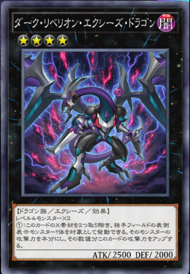
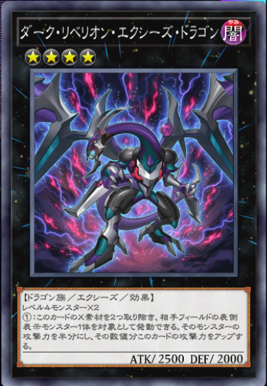
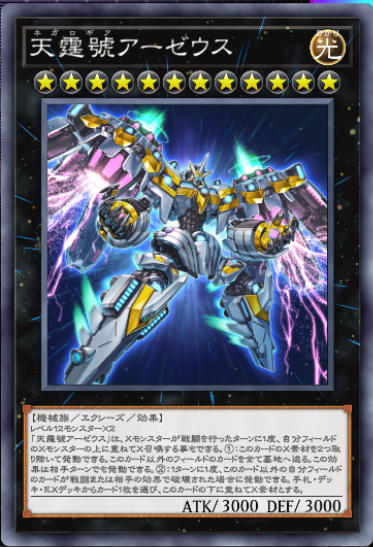
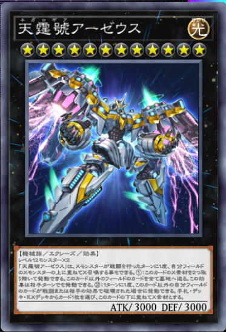

相性の良いカード
初動が通常召喚でないカード、テーマであるのなら基本的に相性がいい。
【ナチュル】
全てのモンスターが地属性で、植物族、昆虫族もテーマ内に存在する。
相手のあらゆる行動に反応して効果を発動する妨害よりなテーマで、「ナチュル・ビースト」を召喚できれば、落とし穴系では対処できない魔法の発動を無効にできる。
また、「ナチュルの神星樹」は地属性の植物族・昆虫族をリリースすると、逆の種族のモンスターを蘇生する永続罠で、蟲惑魔にもフル対応しているため扱いやすい。
【春化精】
全てのモンスターが地属性、天使族で構成されている。
共通の効果として、手札のモンスターを墓地に送りながら、墓地の地属性モンスターを蘇生する効果がある。
ナチュルと比べてこちらはリソース稼ぎに秀でており、盤面を地属性で埋め尽くせば様々な効果を使うことができる。
【アーティファクト】
効果モンスターなのに魔法・罠カードゾーンにセットできて、破壊されると特殊召喚されるモンスターテーマ。
蟲惑魔は罠カードを大量に使う関係上、セットが多くそのセットカードを狙われると手も足も出なくなってしまう。そこでアーティファクトを落とし穴に混ぜてセットしておけば、一掃されてもそれぞれの効果で相手の行動を阻害することができる。特に「アーティファクト-デスサイズ」は強力。
似たような性質の「やぶ蛇」を採用するのもアリ。
【バージェストマ】
メインデッキに入るカードはすべて通常罠カードなテーマ。
共通の効果で、自他問わず罠カードの発動に呼応して墓地からモンスターカードとして特殊召喚できる。つまり、ホールティアのコストにするとその効果にチェーンして特殊召喚できる。さらにこの効果で特殊召喚されるとモンスターの効果を受けなかったりするので侮れない。
レベルは2なので蟲惑魔のX素材にはできないが、汎用リンクモンスターの素材にしたり、「スプライト・ガンマ・バースト」でクラリアと共に不意をついたりするのに使える。
【機界騎士(ジャックナイツ)】
カードが縦列に2枚以上並んでいると手札から特殊召喚できる効果を持つ、サイキック族主体のテーマ。
蟲惑魔1体から出せるセラと罠カードを同じ列に置くことで、ジャックナイツの特殊召喚条件を簡単に満たすことが可能。
出張要員としては互いをサーチ可能で手札を補充し続けられる「紫宵の機界騎士」と「蒼穹の機界騎士」が優秀。「紺碧の機界騎士」も入れると、紫宵と並べてランク8エクシーズも狙える。
【ラビュリンス】
環境で大活躍している罠デッキ。
下級はレベル4で、サーチ、特殊召喚など優秀な効果を沢山持っている。
「ビッグウェルカム・ラビュリンス」の手札戻しの対象をEXデッキ蟲惑魔に当てればノーコストで使用できる。
また、「迷宮城の白銀姫」は天獄の王のように通常罠カードを使うだけで特殊召喚できるため、使い勝手が良い。
天獄の王
自分のターン中に手札から相手のエンドフェイズ時まで公開することで、セットされたカードを破壊から守る大型モンスター。
セットカードの発動時に自身を手札から特殊召喚することもできる。公開中に自身の効果で特殊召喚に成功した場合、デッキから任意の魔法・罠をサーチしてセットできるおまけ付きで、使わなければ次ターンのエンドフェイズに除外されてしまうが、ランカの効果で手札に戻せば問題なし。
攻守は3000と非常に高く、セットカードも守ってくれるためとても相性がいい。
メタル・リフレクト・スライム
発動後は守備力3000のモンスターになる永続罠。
これを素材にして、「神・スライム」を召喚すれば、非力な蟲惑魔達への攻撃をそちらに集中させることができる。
天獄の王から持ってくると無駄がない。
 

汎用ランク4エクシーズモンスター
蟲惑魔の新規でさらに展開力が上がったため、蟲惑魔以外のエクシーズモンスターを召喚する余裕も出てきている。
制圧盤面のダメ押しとして召喚したり、足りない火力を補ったりして戦力の補強をしよう。

 

汎用エクシーズモンスター
同じランクのエクシーズモンスターが多数並ぶので、「FNo.0 未来皇ホープ」の召喚条件を満たしやすい。
相手モンスターのコントロールを奪う「FNo.0 未来龍皇ホープ」や、強力な全体除去効果を持つ「天霆號アーゼウス」を出すこともできる。
汎用リンクモンスター
リンクモンスターも展開力の上がった蟲惑魔では出しやすくなった。
純構築の蟲惑魔よりは、他のテーマと組み合わせた蟲惑魔デッキの場合のほうが使いやすいかもしれない。